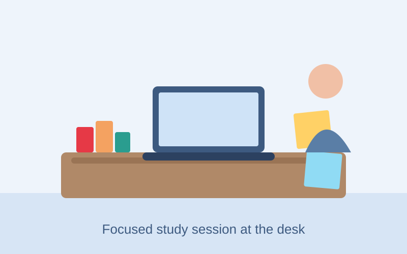

A web application that helps students create, update, delete and view their study tasks so that no deadline is ever missed again.

About This App
The My Study Task Manager web application was built for a simple purpose: students usually juggle many academic responsibilities at the same time - assignments, revision tasks, quizzes and project deadlines - and informal methods such as handwritten notes or basic spreadsheets become unreliable as the workload grows.
This application provides a structured and user-friendly interface so that a student can manage all study tasks from one central place. Its key features are:
Add a task title, course code and name, due date, description and priority.
Select an existing task and edit any of its details, then save the changes.
Remove tasks that are no longer needed, with a confirmation dialog.
All current tasks are shown in an ordered table sorted by due date.
Invalid dates and empty required fields are rejected with clear error messages.
Access to the task manager is restricted by a username and password.
About Me
Hi! I am an IT student who built this application as part of my coursework. I am currently studying courses such as Information Technology Systems (INFO1012) and I am particularly interested in web development and user experience design.
Like most students, I used to manage my study workload with sticky notes and a paper planner. That worked at the start of the semester, but when several course assessments shared the same deadline week, tasks started to slip through the cracks. That experience is exactly why I designed this application around my own study habits: I list every task as soon as it is announced, sort everything by due date, and review the list every morning before lectures.
Example from my routine: every Monday I plan the week's revision tasks, and every Friday I clean up finished tasks in the manager - the same workflow this app supports with its create, update and delete features.